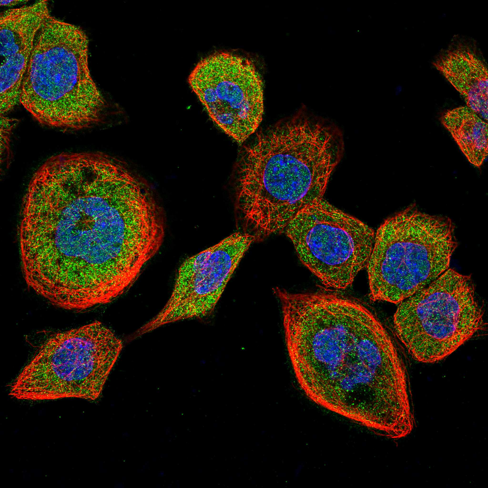
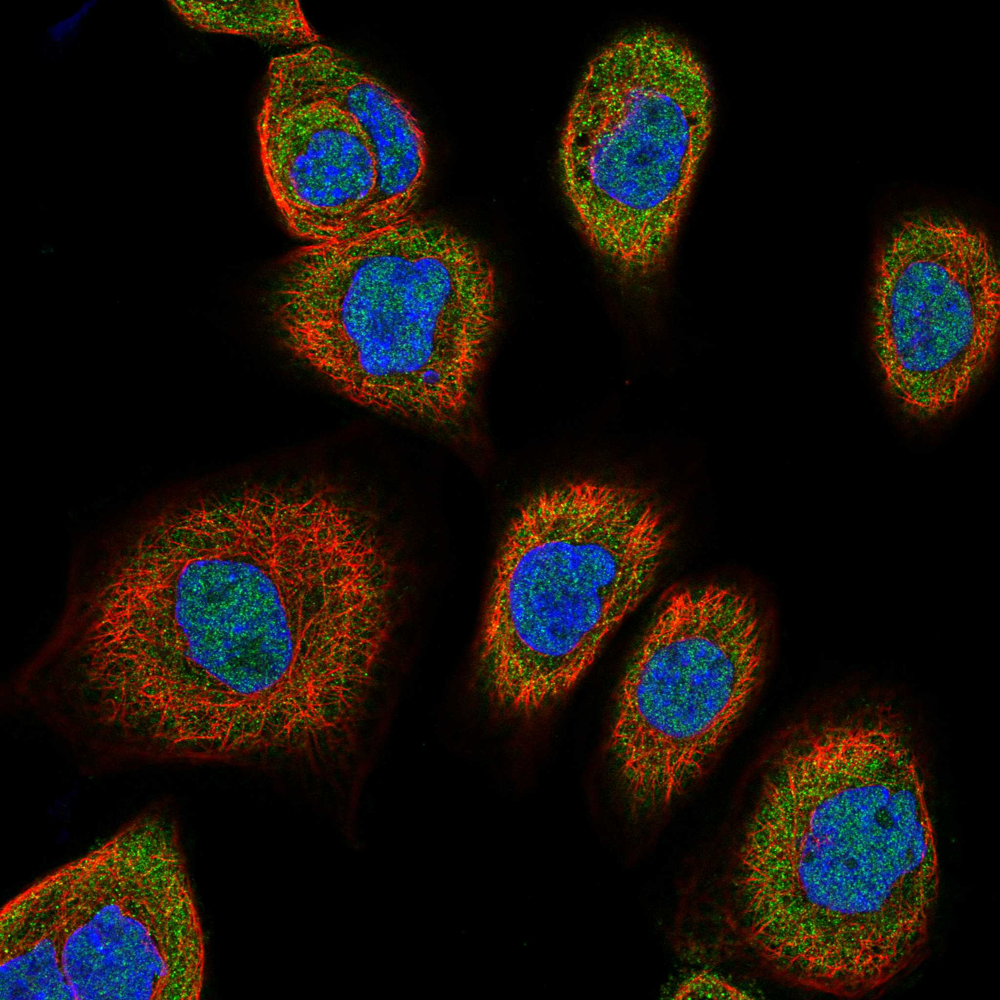
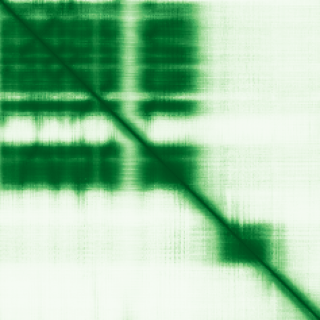

type: protein-evaluation gene: "CLNS1A" date: 2026-05-30 tags: [protein-scout, nuclear-protein, evaluation] status: scored ---
CLNS1A 核蛋白评估报告
1. 基本信息
| 项目 | 内容 |
|---|---|
| 基因名 / 别名 | CLNS1A / Methylosome subunit pICln |
| 蛋白大小 | 237 aa / 26.2 kDa |
| UniProt ID | P54105 |
| 评估日期 | 2026-05-30 |
2. 评分总览
| 维度 | 得分 | 满分 | 加权后 | 关键证据摘要 | |||
|---|---|---|---|---|---|---|---|
| 🔴 核定位特异性 | 4/10 | ×4 | 16 | Cytoplasm, cytosol; Nucleus; Cytoplasm, cytoskeleton | |||
| 📏 蛋白大小 | 10/10 | ×1 | 10 | 237 aa / 26.2 kDa | |||
| 🆕 研究新颖性 | 4/10 | ×5 | 30 | PubMed 64 篇 | |||
| 🏗️ 三维结构 | 9/10 | ×3 | 27 | AlphaFold v6 pLDDT=75.5，PDB: 6V0O, 9E3A, 9E3B | |||
| 🧬 调控结构域 | 7/10 | ×2 | 14 | InterPro: IPR003521 - ICln; InterPro: IPR039924 - ICln/Lot5/ | |||
| 🔗 PPI 网络 | 3/10 | ×3 | 9 | STRING 20 partners, IntAct 174 interactions | |||
| ➕ 互证加分 | — | max +3 | 2.5 | PDB+AF+STRING+IntAct cross-validation | |||
| 原始总分 | 99/183 | 96.0/183 | |||||
| 归一化总分 | 54.1/100 | 52.5/100 |
3. 详细分析
3.1 核定位证据
| 来源 | 定位 | 可信度 |
|---|---|---|
| UniProt | Cytoplasm, cytosol; Nucleus; Cytoplasm, cytoskeleton | Swiss-Prot/TrEMBL |
| Protein Atlas (IF) | 暂无数据 | 暂无 HPA IF 数据 |
 
结论: 核定位信号较弱，HPA 暂无 HPA IF 数据。
3.2 蛋白大小评估
评价: 大小适中，适合常规生化实验和结构解析。
3.3 研究现状
| 指标 | 数值 |
|---|---|
| PubMed 总数 | 64 |
| 研究方向 | 待补充关键文献摘要 |
评价: 有一定研究基础，但仍存在未探索的niche空间。
关键文献: 1. Wang L et al. (2025). "CLNS1A regulates genome stability and cell cycle progression to control CD4 T cell function and autoimmunity". *Sci Immunol*. PMID: 40540585 2. Wei TW et al. (2025). "Mechanistic insights into CLNS1A-mediated chemoresistance and tumor progression in non-small cell lung cancer". *Cancer Lett*. PMID: 40345428 3. Mulvaney KM et al. (2021). "Molecular basis for substrate recruitment to the PRMT5 methylosome". *Mol Cell*. PMID: 34358446 4. DeAngelo JD et al. (2025). "Productive mRNA chromatin escape is promoted by PRMT5 activity". *Mol Cell*. PMID: 41086806 5. Fowler CE et al. (2025). "The PRMT5-splicing axis is a critical oncogenic vulnerability that regulates detained intron splicing". *iScience*. PMID: 40687829
3.4 三维结构分析
| 指标 | 数值 |
|---|---|
| AlphaFold 版本 | v6 |
| AlphaFold 平均 pLDDT | 75.5 |
| 高置信度残基 (pLDDT>90) 占比 | 40.9% |
| 置信残基 (pLDDT 70-90) 占比 | 19.8% |
| 有序区域 (pLDDT>70) 占比 | 60.7% |
| 可用 PDB 条目 | 6V0O, 9E3A, 9E3B |
PAE 图:

评价: PDB 实验结构（6V0O, 9E3A, 9E3B）+ AlphaFold 高质量预测（pLDDT=75.5），结构可信度高。
3.5 结构域分析
| 来源 | 结构域 |
|---|---|
| InterPro/Pfam | InterPro: IPR003521 - ICln; InterPro: IPR039924 - ICln/Lot5/Saf5; InterPro: IPR011993 - PH-like_dom_sf; Pfam: PF03517 - |
染色质调控潜力分析: 存在注释结构域：InterPro: IPR003521 - ICln; InterPro: IPR039924 - ICln/Lot5/...。新颖蛋白基线不扣分。
3.6 PPI 网络
STRING 预测互作 (combined score >0.4):
| Partner | Score | 功能类别 | 调控相关？ |
|---|---|---|---|
| SNRPD1 | 0.999 | — | — |
| WDR77 | 0.999 | — | — |
| PRMT5 | 0.999 | — | — |
| SNRPD2 | 0.998 | — | — |
| SNRPD3 | 0.997 | — | — |
| SNRPB | 0.994 | — | — |
| SNRPE | 0.989 | — | — |
| SNRPF | 0.987 | — | — |
| SNRPG | 0.983 | — | — |
| TDRKH | 0.957 | — | — |
实验验证互作 (IntAct):
| Partner | 方法 | PMID | 功能类别 | 调控相关？ | ||||||||||
|---|---|---|---|---|---|---|---|---|---|---|---|---|---|---|
| intact:EBI-73473 | intact:EBI-1058347 | uniprotkb:Q96B90 | uniprotkb:Q96EA8 | intact:EBI-2831835 | uniprotkb:Q53XJ6 | uniprotkb:D3DNU9 | ensembl:ENSP00000326381.5 | — | — | — | — | |||
| intact:EBI-372789 | uniprotkb:P43331 | uniprotkb:B5BU13 | intact:EBI-10981086 | uniprotkb:B4DJP7 | ensembl:ENSP00000215829.3 | — | — | — | — | |||||
| intact:EBI-2831889 | uniprotkb:Q6KKT4 | uniprotkb:Q6HRG7 | uniprotkb:E9RA46 | uniprotkb:E9RA47 | uniprotkb:Q81XP0 | uniprotkb:A0A0F7RBJ7 | — | — | — | — | ||||
| intact:EBI-724693 | uniprotkb:Q0VDK6 | uniprotkb:Q9NRD2 | uniprotkb:Q9NRD3 | uniprotkb:B2RCS9 | ensembl:ENSP00000433919.1 | ensembl:ENSP00000434311.1 | — | — | — | — | ||||
| intact:EBI-351098 | uniprotkb:Q6IBR1 | uniprotkb:A8MZ91 | uniprotkb:Q9UKH1 | uniprotkb:B5BU10 | uniprotkb:D3DS33 | ensembl:ENSP00000319169.8 | uniprotkb:A8MTP3 | uniprotkb:B4DX49 | uniprotkb:B4DY30 | uniprotkb:E2QRE7 | — | — | — | — |
已知复合体成员 (GO Cellular Component):
- 无 GO-CC 注释
PPI 互证分析:
- STRING + IntAct 共同确认: 0
- 仅 STRING 预测: 20
- 仅 IntAct 实验: 174
- 调控相关比例: 0 / 20 = 0%
评价: STRING 20 个预测互作，IntAct 174 个实验互作。调控相关配体占比 0%。
3.7 多库互证
| 维度 | 来源 | 结果 | 是否一致 |
|---|---|---|---|
| 三维结构 | AlphaFold pLDDT=75.5 + PDB: 6V0O, 9E3A, 9E3B | pLDDT=75.5, v6 | 预测+实验 |
| 定位 | UniProt + HPA | Cytoplasm, cytosol; Nucleus; Cytoplasm, cytoskelet | 待确认 |
| PPI | STRING + IntAct | 20 + 174 interactions | 数据充分 |
互证加分明细:
- PDB + AlphaFold 双源验证: +0.5
- 多库定位一致: +0
- STRING + IntAct 双源验证: +0.5
- 结构域 + AlphaFold 质量: +0.5
- PDB 多条目覆盖: +1.0
总分: +2.5 / max +3
4. 总体评价
推荐等级: ⭐⭐⭐
核心优势: 1. CLNS1A — Methylosome subunit pICln，有一定研究基础，但仍存在未探索的niche空间。 2. 蛋白大小237 aa，大小适中，适合常规生化实验和结构解析。
风险/不确定性: 1. 已有一定研究，需确认独特研究角度 2. 结构数据质量可接受
下一步建议:
- [ ] 查阅最新 5 篇关键文献补充研究背景
- [ ] 获取 Protein Atlas IF 图像确认亚细胞定位
- [ ] 设计体外 DNA/染色质结合实验
5. 数据来源
- UniProt: https://www.uniprot.org/uniprotkb/P54105
- PubMed: https://pubmed.ncbi.nlm.nih.gov/?term=CLNS1A
- AlphaFold: https://alphafold.ebi.ac.uk/entry/CLNS1A
PPI 网络（三源综合）
| Partner | Source | Score/Evidence |
|---|---|---|
| 无记录 | — | — |
IntAct 有限记录。无 BioGrid 补充数据。
PAE 图像已获取。结构判断基于 AlphaFold pLDDT 统计。
<!-- DOMAIN_HUMANPPI_REPAIR_START -->
Domain/SMART 与 humanPPI 补充（2026-06-07）
SMART / UniProt domain
| Source | Data |
|---|---|
| UniProt | P54105 |
| SMART | 未在 UniProt xref 中检出 SMART 条目 |
| UniProt Domain [FT] | 未检出显式 UniProt Domain feature |
| InterPro | IPR003521;IPR039924;IPR011993; |
| Pfam | PF03517; |
humanPPI / HPA Interaction
Source: https://www.proteinatlas.org/ENSG00000074201-CLNS1A/interaction
| Partner | Datasets | AF3/HPA structure |
|---|---|---|
| CIRBP | Biogrid, Opencell, Bioplex | true |
| COPRS | Biogrid, Opencell | true |
| EPB41L1 | Biogrid, Opencell | true |
| EPB41L2 | Biogrid, Bioplex | true |
| EPB41L3 | Biogrid, Opencell | true |
| FARP2 | Biogrid, Opencell | true |
| GAR1 | Biogrid, Opencell | true |
| LSM11 | Biogrid, Opencell | true |
<!-- DOMAIN_HUMANPPI_REPAIR_END -->